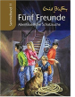

fünf Freunde - Abenteuerliche Schatzsuche: Sammelband 11

Seit uber 50 Jahren fiebern Kinder mit, wenn die fünf Freunde Anne, Georg (die eigentlich Georgina heisst), Richard, Julius und der Hund Tim in alten Gemauern, dunklen Hohlen oder unterirdischen Gangen verborgene Schatze aufspuren oder sich gegen finstere Gestalten behaupten. In diesem elften Sammelband gehen die fünf Freunde auf Schatzsuche. Fur die kleinen Leser Spaßnung pur: "fünf Freunde und die geheimnisvolle Schatztruhe", "fünf Freunde und die seltsame Erbschaft" und "fünf Freunde suchen den verschollenen Goldschatz".